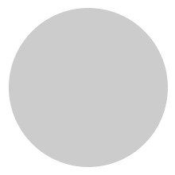
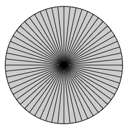
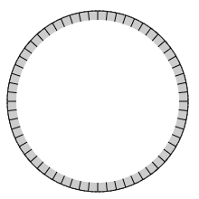
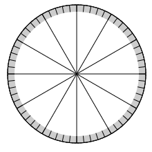
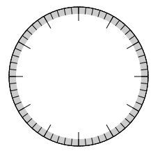
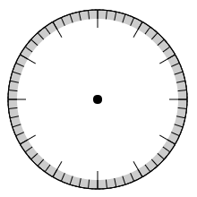

使用canvas绘制时钟并通过class面向对象
1、思路分析
效果如右图:
通过观察可以发现钟表可分为静止的刻度和动态的指针两大部分
由于指针具有动态性，必然需要定时器实时刷新清空并重绘
但刻度部分如果一起清空并重绘会降低性能
因此可以使用两个重叠在一起的canvas画板来分别绘制两个部分
2、绘制表盘步骤
2.1、首先获取第一个面板的上下文：
var canvas1=document.getElementById("canvas1");
var ctx1=canvas1.getContext("2d");
2.2、由于表盘是由多个圆盘和两种不同粗细的刻度组成的，因此先定义两个函数
定义一个画实心圆的函数
function drawDisk(radius,fillStyle){
ctx1.beginPath()
ctx1.arc(150,150,radius,0,2*Math.PI)
ctx1.fillStyle=fillStyle
ctx1.fill()
ctx1.closePath()
}
定义一个画刻度的函数
function drawScale(count){
ctx1.beginPath()
for(var i=0; i<count; i++){
ctx1.moveTo(150,150)
ctx1.arc(150,150,100,i*2*Math.PI/count,(i+1)*2*Math.PI/count)
}
ctx1.stroke()
ctx1.closePath()
}
2.4、画一个灰色的底盘
drawDisk(100,"#ccc")
2.5、画60个细的刻度
drawScale(60)
2.6、画一个白色的圆盘盖住细刻度的多余部分
drawDisk(90,"white")

2.7、画12个粗的刻度
drawScale(12)
2.8、画一个白色的圆盘盖住粗刻度的多余部分
drawDisk(80,"white")
2.9、画一个黑色的小圆点作为钟表的中心
drawDisk(5,"black")

3、绘制表针步骤
3.1、首先获取第二个面板的上下文：
var canvas2=document.getElementById("canvas2");
var ctx2=canvas2.getContext("2d");
3.2、定义一个画针的函数
function drawHand(radius,deg,lineWidth){
ctx2.beginPath()
ctx2.moveTo(150,150)
ctx2.arc(150,150,radius,deg,deg)
ctx2.lineWidth=lineWidth
ctx2.lineCap= "round"
ctx2.stroke()
ctx2.closePath()
}
3.3、开启定时器实时刷新钟表指针
setInterval(function(){
var d=new Date();
var h=d.getHours();
var m=d.getMinutes();
var s=d.getSeconds();
//console.log(h,m,s)
ctx2.clearRect(0,0,300,300)
drawHand(50,h*30*Math.PI/180+m*0.5*Math.PI/180-0.5*Math.PI,5) //时针
drawHand(68,m*6*Math.PI/180-0.5*Math.PI,3) //分针
drawHand(80,s*6*Math.PI/180-0.5*Math.PI,2) //秒针
},1000)
4、面向对象封装思路
a.整个钟表可视为一个对象
b.钟表有4个实心圆、2种刻度和3根指针作为钟表的9个属性
c.钟表有一个绘制的方法
d.实心圆、刻度、指针又可视为一个对象，它们也应该有一个绘制方法
5、封装对象
5.1、封装实心圆对象
class Disk {
/**
* 实心圆构造器
* @param [Object] ctx 画布上下文对象
* @param [Number] radius 实心圆半径
* @param [String] fillStyle 实心圆颜色样式
*/
constructor(ctx = null, radius = 10, fillStyle = "red") {
this.ctx = ctx
this.radius = radius
this.fillStyle = fillStyle
}
/**
* 实心圆绘制方法
* @param [Number] cX 圆心X坐标
* @param [Number] cY 圆心Y坐标
*/
drawDisk(cX, cY) {
this.ctx.beginPath()
this.ctx.arc(cX, cY, this.radius, 0, 2 * Math.PI)
this.ctx.fillStyle = this.fillStyle
this.ctx.fill()
this.ctx.closePath()
}
}
5.2、封装刻度对象
class Scale {
/**
* 刻度构造器
* @param [Object] ctx 画布上下文对象
* @param [Number] count 刻度的个数
*/
constructor(ctx = null, count = 600) {
this.ctx = ctx
this.count = count
}
/**
* 刻度绘制方法
* @param [Number] cX 刻度所在圆的圆心X坐标
* @param [Number] cY 刻度所在圆的圆心Y坐标
* @param [Number] radius 刻度所在圆的半径
*/
drawScale(cX, cY, radius) {
this.ctx.beginPath()
for (var i = 0; i < this.count; i++) {
this.ctx.moveTo(cX, cY)
this.ctx.arc(cX, cY, radius, i * 2 * Math.PI / this.count, (i + 1) * 2 * Math.PI / this.count)
}
this.ctx.stroke()
this.ctx.closePath()
}
}
5.3、封装表盘指针对象
class Hand {
/**
* 钟表指针类构造器
* @param [Object] ctx 画布上下文对象
* @param [Number] length 指针长度
* @param [Number] lineWidth 指针宽度
* @param [String] strokeStyle 指针颜色样式
*/
constructor(ctx = null, length = 20, lineWidth = 2, strokeStyle = "black") {
this.ctx = ctx
this.length = length
this.lineWidth = lineWidth
this.strokeStyle = strokeStyle
}
/**
* 指针绘制方法
* @param cX
* @param cY
* @param deg
*/
drawHand(cX, cY, deg) {
this.ctx.beginPath()
this.ctx.moveTo(cX, cY)
this.ctx.arc(cX, cY, this.length, deg, deg)
this.ctx.lineWidth = this.lineWidth
this.ctx.strokeStyle = this.strokeStyle
this.ctx.lineCap = "round"
this.ctx.stroke()
this.ctx.closePath()
}
}
5.4、封装钟表对象
class Clock {
/**
* 钟表类构造器
* @param [Object] ctx1 指针画布上下文对象
* @param [Object] ctx2 表盘画布上下文对象
* @param [Number] cX 钟表圆心X左标
* @param [Number] cY 钟表圆心Y左标
* @param [Number] radius 钟表半径
*/
constructor(ctx1 = null, ctx2 = null, cX = 100, cY = 100, radius = 100) {
this.ctx1 = ctx1
this.ctx2 = ctx2
this.cX = cX
this.cY = cY
this.radius = radius
this.bigDisk = new Disk(this.ctx1, this.radius, "#ccc")
this.midDisk = new Disk(this.ctx1, this.radius * 0.9, "white")
this.smallDisk = new Disk(this.ctx1, this.radius * 0.8, "white")
this.dotDisk = new Disk(this.ctx2, 5, "red")
this.thinScale = new Scale(this.ctx1, 60) /*60个细刻度*/
this.wideScale = new Scale(this.ctx1, 12) /*12个粗刻度*/
this.hHand = new Hand(this.ctx2, this.radius * 0.5, 6)
this.mHand = new Hand(this.ctx2, this.radius * 0.68, 4)
this.sHand = new Hand(this.ctx2, this.radius * 0.8, 2, 'red')
}
/**
* 钟表绘制方法
*/
drawClock() {
this.bigDisk.drawDisk(this.cX, this.cY) /*画底盘*/
this.thinScale.drawScale(this.cX, this.cY, this.radius) /*画60个细的刻度*/
this.midDisk.drawDisk(this.cX, this.cY) /*画一个圆盘盖住细刻度的多余部分*/
this.wideScale.drawScale(this.cX, this.cY, this.radius) /*画12个粗的刻度*/
this.smallDisk.drawDisk(this.cX, this.cY) /*画一个圆盘盖住粗刻度的多余部分*/
/**
* 钟表指针重绘函数
*/
let renewHand=()=> {
var d = new Date()
var h = d.getHours()
var m = d.getMinutes()
var s = d.getSeconds()
//console.log(h,m,s)
this.ctx2.clearRect(this.cX - this.radius, this.cY - this.radius, this.radius * 2, this.radius * 2)
this.hHand.drawHand(this.cX, this.cY, h * 30 * Math.PI / 180 + m * 0.5 * Math.PI / 180 - 0.5 * Math.PI) //时针
this.mHand.drawHand(this.cX, this.cY, m * 6 * Math.PI / 180 - 0.5 * Math.PI) //分针
this.sHand.drawHand(this.cX, this.cY, s * 6 * Math.PI / 180 - 0.5 * Math.PI) //秒针
this.dotDisk.drawDisk(this.cX, this.cY) //画一个小圆点作为钟表的中心
}
renewHand()
setInterval(renewHand, 1000)
}
}
6、实例化钟表对象
var canvas3=document.getElementById("canvas3");
var ctx3=canvas3.getContext("2d");
var canvas4=document.getElementById("canvas4");
var ctx4=canvas4.getContext("2d");
var clock = new Clock(ctx3,ctx4,150,150,100);
clock.drawClock();
这种绘制钟表的方法可以根据需求定制钟表的一些属性然后再调用绘制方法
clock.bigDisk.fillStyle="yellow"
clock.smallDisk.fillStyle="#3f3"
clock.sHand.strokeStyle="pink"
clock.mHand.strokeStyle="#a0aea0"
clock.hHand.strokeStyle="red"
7、拓展：画表盘数字
for(let i = 1; i < 13; i++){
this.ctx1.fillStyle = "pink"
this.ctx1.fillText(i+"",this.cX+70*Math.sin(i*Math.PI/6)-4,this.cY-70*Math.cos(i*Math.PI/6))
}